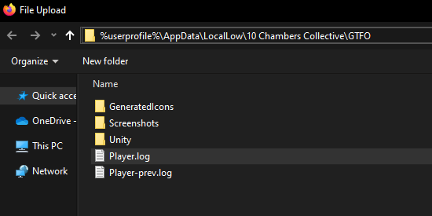

GTFO Log Tracker
Track your progress toward the D-Lock Block Decipherer achievement. No mods, no spreadsheets, no uncertainty.
All you have to do is open your Player.log file. It should be located in %userprofile%\AppData\LocalLow\10 Chambers Collective\GTFO.
Your data never leaves your computer. All processing is done locally, in your browser.
| Expedition | Zone | Name | Read |
|---|